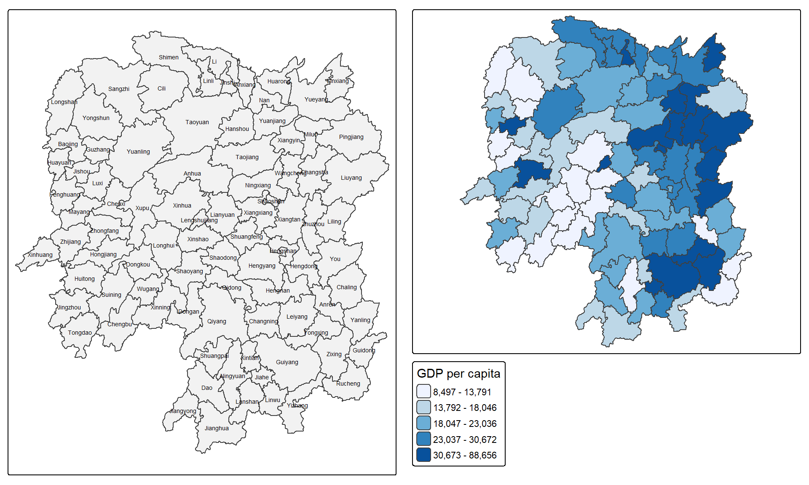
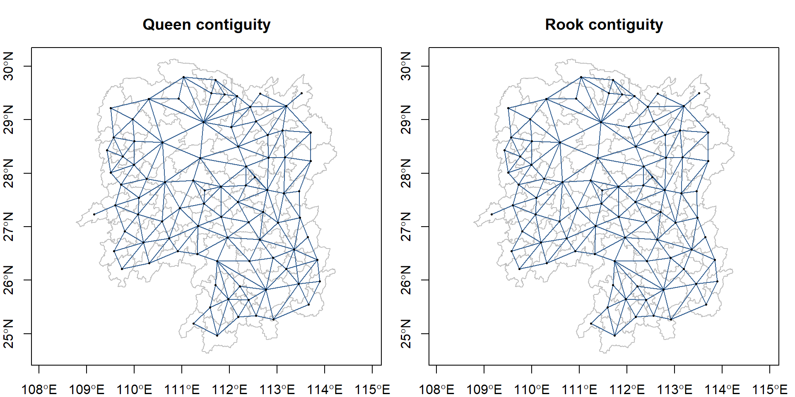
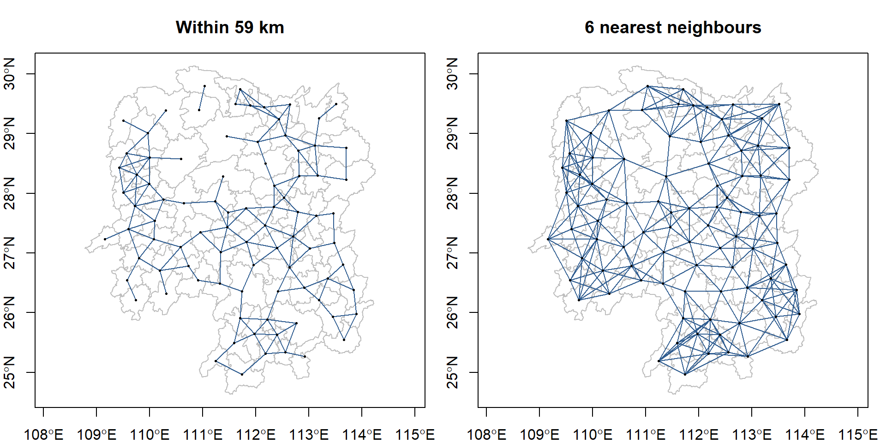
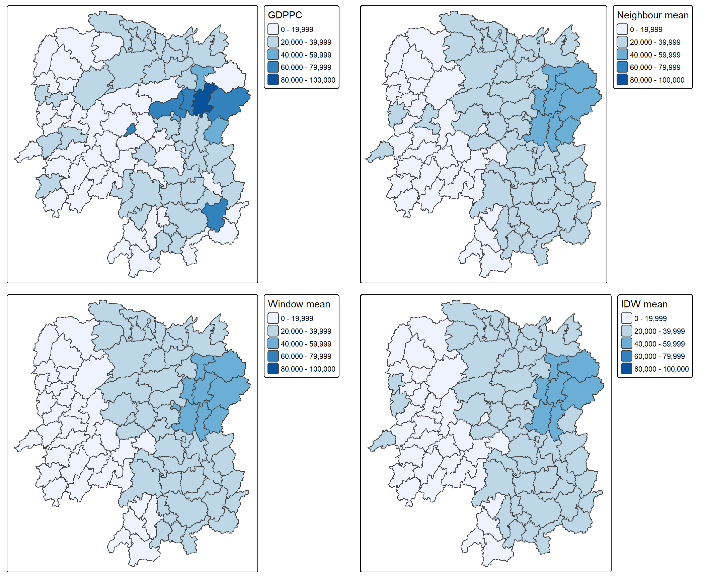
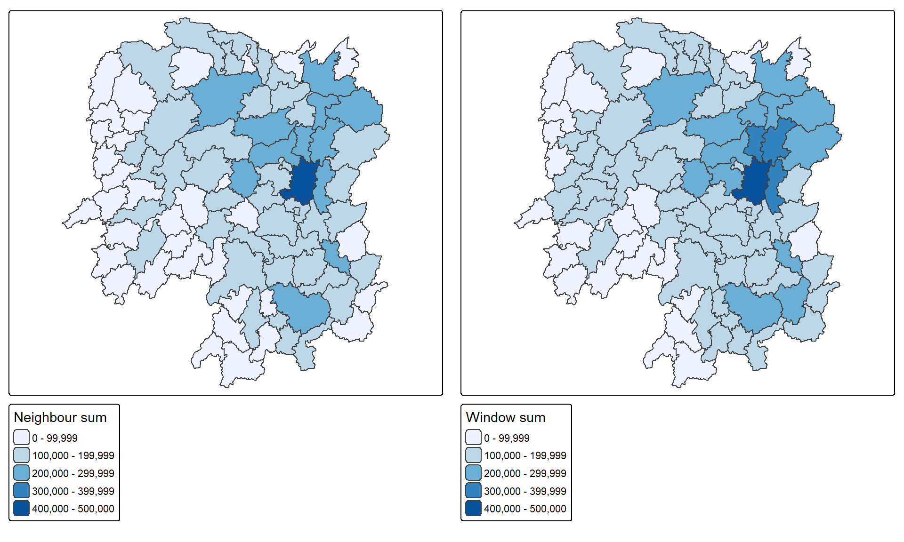

library(sf)
library(spdep)
library(tmap)
library(dplyr)
library(readr)
library(knitr)
tmap_mode("plot")Hands-on Exercise 4
Spatial weights and their applications in Hunan
1. Objective and setup
This exercise studies how the definition of a county’s neighbourhood changes a spatial summary of GDP per capita (GDPPC). I construct contiguity and distance neighbours, assign weights, and compare four spatial summaries using Hunan’s 2012 county data. The workflow follows course Chapter 8.
2. Import and join the data
The shapefile stores county polygons in WGS 84. The CSV contains development indicators for 2012. Both inputs are included in this project under handson4/data, from the instructor’s Lesson 4 data. An explicit county key prevents accidental matching on unrelated columns.
hunan <- st_read("handson4/data/geospatial", layer = "Hunan", quiet = TRUE)
hunan2012 <- read_csv("handson4/data/aspatial/Hunan_2012.csv",
show_col_types = FALSE)
stopifnot(!anyDuplicated(hunan$County), !anyDuplicated(hunan2012$County))
hunan <- left_join(hunan, hunan2012, by = "County") |>
select(NAME_2, ID_3, NAME_3, County, GDPPC)
stopifnot(nrow(hunan) == 88L, !anyNA(hunan$GDPPC),
all(st_is_valid(hunan)))
kable(head(st_drop_geometry(hunan)), caption = "Joined county attributes")| NAME_2 | ID_3 | NAME_3 | County | GDPPC |
|---|---|---|---|---|
| Changde | 21098 | Anxiang | Anxiang | 23667 |
| Changde | 21100 | Hanshou | Hanshou | 20981 |
| Changde | 21101 | Jinshi | Jinshi | 34592 |
| Changde | 21102 | Li | Li | 24473 |
| Changde | 21103 | Linli | Linli | 25554 |
| Changde | 21104 | Shimen | Shimen | 27137 |
basemap <- tm_shape(hunan) + tm_polygons(fill = "grey95") +
tm_text("NAME_3", size = 0.45)
gdppc <- tm_shape(hunan) +
tm_polygons(fill = "GDPPC",
fill.scale = tm_scale_intervals(style = "quantile", n = 5,
values = "brewer.blues"),
fill.legend = tm_legend(title = "GDP per capita"))
tmap_arrange(basemap, gdppc, ncol = 2)
kable(st_drop_geometry(hunan) |> arrange(desc(GDPPC)) |> head(5),
caption = "Five counties with the highest recorded GDPPC")| NAME_2 | ID_3 | NAME_3 | County | GDPPC |
|---|---|---|---|---|
| Changsha | 21107 | Changsha | Changsha | 88656 |
| Changsha | 21111 | Wangcheng | Wangcheng | 70666 |
| Chenzhou | 21122 | Zixing | Zixing | 65706 |
| Loudi | 21143 | Lengshuijiang | Lengshuijiang | 64257 |
| Changsha | 21109 | Liuyang | Liuyang | 63118 |
The highest recorded GDPPC is in Changsha (88,656), while the lowest is in Guidong (8,497). The choropleth shows county values; it does not establish statistically significant clusters.
3. Contiguity neighbours
Queen neighbours share at least a boundary point; rook neighbours share a boundary segment. I use projected polygons for planar boundary topology and centroid calculation. Centroids are then transformed back to longitude/latitude for great-circle distances in kilometres.
hunan_utm <- st_transform(hunan, 32649)
wm_q <- poly2nb(hunan_utm, queen = TRUE)
wm_r <- poly2nb(hunan_utm, queen = FALSE)
centres <- st_transform(st_centroid(st_geometry(hunan_utm)), 4326)
coords <- st_coordinates(centres)
describe_nb <- function(x, label) {
tibble(Method = label, Regions = length(x),
Directed_links = sum(card(x)),
Minimum = min(card(x)), Mean = mean(card(x)),
Maximum = max(card(x)), Isolates = sum(card(x) == 0))
}
kable(bind_rows(describe_nb(wm_q, "Queen"), describe_nb(wm_r, "Rook")),
digits = 2)| Method | Regions | Directed_links | Minimum | Mean | Maximum | Isolates |
|---|---|---|---|---|---|---|
| Queen | 88 | 448 | 1 | 5.09 | 11 | 0 |
| Rook | 88 | 440 | 1 | 5.00 | 10 | 0 |
draw_nb <- function(nb, title) {
plot(st_geometry(hunan), border = "grey75", main = title, axes = TRUE)
plot(nb, coords, add = TRUE, col = "#315e91", pch = 16, cex = 0.35)
}
par(mfrow = c(1, 2), mar = c(2, 2, 3, 1))
draw_nb(wm_q, "Queen contiguity")
draw_nb(wm_r, "Rook contiguity")
Queen contiguity gives 448 directed links, compared with 440 for rook contiguity. A reciprocal pair contributes two directed links. Queen includes corner contacts, so its graph is at least as inclusive as the rook graph.
nb1 <- wm_q[[1]]
kable(st_drop_geometry(hunan)[nb1, c("County", "GDPPC")],
caption = paste("Queen neighbours of", hunan$County[1]))| County | GDPPC | |
|---|---|---|
| 2 | Hanshou | 20981 |
| 3 | Jinshi | 34592 |
| 4 | Li | 24473 |
| 57 | Nan | 21311 |
| 85 | Taoyuan | 22879 |
4. Distance and nearest-neighbour weights
A fixed distance includes every centroid within the threshold. I first find each county’s closest neighbour, then round the largest of these distances up to a kilometre. This ensures that every county has at least one neighbour; it does not by itself guarantee a fully connected graph. Unlike a fixed radius, six-nearest-neighbour selection gives every county exactly six outgoing links.
k1 <- knn2nb(knearneigh(coords, k = 1, longlat = TRUE))
nearest_km <- unlist(nbdists(k1, coords, longlat = TRUE))
cutoff_km <- ceiling(max(nearest_km))
wm_dist <- dnearneigh(coords, d1 = 0, d2 = cutoff_km, longlat = TRUE)
knn6 <- knn2nb(knearneigh(coords, k = 6, longlat = TRUE))
stopifnot(all(card(wm_dist) > 0), all(card(knn6) == 6))
kable(tibble(Minimum_nearest_km = min(nearest_km),
Maximum_nearest_km = max(nearest_km), Threshold_km = cutoff_km),
digits = 2)| Minimum_nearest_km | Maximum_nearest_km | Threshold_km |
|---|---|---|
| 24.79 | 58.36 | 59 |
kable(bind_rows(describe_nb(wm_dist, "Fixed distance"),
describe_nb(knn6, "6 nearest neighbours")), digits = 2)| Method | Regions | Directed_links | Minimum | Mean | Maximum | Isolates |
|---|---|---|---|---|---|---|
| Fixed distance | 88 | 298 | 1 | 3.39 | 6 | 0 |
| 6 nearest neighbours | 88 | 528 | 6 | 6.00 | 6 | 0 |
par(mfrow = c(1, 2), mar = c(2, 2, 3, 1))
draw_nb(wm_dist, paste("Within", cutoff_km, "km"))
draw_nb(knn6, "6 nearest neighbours")
The distance graph allows varying neighbour counts. The k-nearest-neighbour graph fixes the count but can be asymmetric: county A may select B without B selecting A. Small differences from tutorial distance results can arise because this exercise calculates centroids in a projected CRS and consistently uses great-circle distances.
5. Inverse-distance and row-standardised weights
For queen neighbours, inverse distance assigns greater weight to closer centroids. A B style with a supplied glist retains these raw weights; it does not normalise their row sums. W divides each row by its sum. Without a glist, B supplies unit weights and W supplies equal weights summing to one.
dist_km <- nbdists(wm_q, coords, longlat = TRUE)
stopifnot(all(unlist(dist_km) > 0), all(card(wm_q) > 0))
ids <- lapply(dist_km, function(d) 1 / d)
idw_raw <- nb2listw(wm_q, glist = ids, style = "B")
idw_w <- nb2listw(wm_q, glist = ids, style = "W")
queen_w <- nb2listw(wm_q, style = "W")
queen_b <- nb2listw(wm_q, style = "B")
stopifnot(all(abs(vapply(queen_w$weights, sum, numeric(1)) - 1) < 1e-10),
all(abs(vapply(idw_w$weights, sum, numeric(1)) - 1) < 1e-10))
kable(tibble(Neighbour = hunan$County[nb1], Distance_km = dist_km[[1]],
IDW_raw = idw_raw$weights[[1]],
IDW_standardised = idw_w$weights[[1]],
Queen_standardised = queen_w$weights[[1]]), digits = 4)| Neighbour | Distance_km | IDW_raw | IDW_standardised | Queen_standardised |
|---|---|---|---|---|
| Hanshou | 65.1219 | 0.0154 | 0.1368 | 0.2 |
| Jinshi | 25.5337 | 0.0392 | 0.3489 | 0.2 |
| Li | 54.9058 | 0.0182 | 0.1622 | 0.2 |
| Nan | 35.6070 | 0.0281 | 0.2502 | 0.2 |
| Taoyuan | 87.3641 | 0.0114 | 0.1020 | 0.2 |
6. Four applications of spatial weights
Let \(x_i\) be county \(i\)’s GDPPC and \(N_i\) its queen neighbours. A neighbour average excludes the focal county; a spatial window includes it. Sums are sensitive to how many counties are included. Adding GDP per capita values is a mathematical demonstration and must not be interpreted as total regional GDP.
| Summary | Counties included | Calculation |
|---|---|---|
| Neighbour mean | Neighbours only | \(\sum_{j\in N_i}x_j/|N_i|\) |
| Neighbour sum | Neighbours only | \(\sum_{j\in N_i}x_j\) |
| Window mean | Neighbours and focal county | \((x_i+\sum_{j\in N_i}x_j)/(|N_i|+1)\) |
| Window sum | Neighbours and focal county | \(x_i+\sum_{j\in N_i}x_j\) |
queen_self <- include.self(wm_q)
window_w <- nb2listw(queen_self, style = "W")
window_b <- nb2listw(queen_self, style = "B")
hunan$Neighbour_mean <- lag.listw(queen_w, hunan$GDPPC)
hunan$Neighbour_sum <- lag.listw(queen_b, hunan$GDPPC)
hunan$Window_mean <- lag.listw(window_w, hunan$GDPPC)
hunan$Window_sum <- lag.listw(window_b, hunan$GDPPC)
hunan$IDW_mean <- lag.listw(idw_w, hunan$GDPPC)
stopifnot(isTRUE(all.equal(hunan$Neighbour_mean[1], mean(hunan$GDPPC[nb1]))),
isTRUE(all.equal(hunan$Window_sum, hunan$Neighbour_sum + hunan$GDPPC)))
kable(head(st_drop_geometry(hunan) |>
select(County, GDPPC, Neighbour_mean, Neighbour_sum, Window_mean, Window_sum)),
digits = 2)| County | GDPPC | Neighbour_mean | Neighbour_sum | Window_mean | Window_sum |
|---|---|---|---|---|---|
| Anxiang | 23667 | 24847.20 | 124236 | 24650.50 | 147903 |
| Hanshou | 20981 | 22724.80 | 113624 | 22434.17 | 134605 |
| Jinshi | 34592 | 24143.25 | 96573 | 26233.00 | 131165 |
| Li | 24473 | 27737.50 | 110950 | 27084.60 | 135423 |
| Linli | 25554 | 27270.25 | 109081 | 26927.00 | 134635 |
| Shimen | 27137 | 21248.80 | 106244 | 22230.17 | 133381 |
For Anxiang, the neighbour mean is 2.48472^{4}. Including its own GDPPC of 2.3667^{4} changes the window mean to 2.46505^{4}. This provides a direct arithmetic check of the spatial lag.
mean_fields <- c("GDPPC", "Neighbour_mean", "Window_mean", "IDW_mean")
mean_breaks <- pretty(range(unlist(st_drop_geometry(hunan)[mean_fields])), n = 5)
map_field <- function(field, title, breaks) {
tm_shape(hunan) + tm_polygons(fill = field,
fill.scale = tm_scale_intervals(style = "fixed", breaks = breaks,
values = "brewer.blues"),
fill.legend = tm_legend(title = title))
}
mean_maps <- Map(function(f, title) map_field(f, title, mean_breaks),
mean_fields, c("GDPPC", "Neighbour mean", "Window mean", "IDW mean"))
do.call(tmap_arrange, c(mean_maps, list(ncol = 2)))
sum_breaks <- pretty(range(c(hunan$Neighbour_sum, hunan$Window_sum)), n = 5)
tmap_arrange(map_field("Neighbour_sum", "Neighbour sum", sum_breaks),
map_field("Window_sum", "Window sum", sum_breaks), ncol = 2)
7. Interpretation
Neighbourhood means reduce the influence of isolated extreme county values, whereas window means retain some influence from the focal county. Common map breaks make these changes comparable. IDW further distinguishes close from distant neighbours within the same queen graph. None of these operations supplies a significance test or proves a causal relationship.
Weights encode an analytical assumption: shared borders, a fixed radius and a fixed neighbour count answer different questions. Counties at the provincial boundary have no observations for neighbours outside this dataset. These edge effects and the use of historical 2012 indicators limit interpretation of the maps as descriptions of present-day Hunan.
8. Reproducibility
The analysis uses the bundled original shapefile and CSV, checks unique join keys and missing GDPPC values, and verifies weight sums and two lag identities. In-class Exercise 4 extends the same dataset to geographically weighted summaries.
Code
sessionInfo()R version 4.5.3 (2026-03-11 ucrt)
Platform: x86_64-w64-mingw32/x64
Running under: Windows 11 x64 (build 26200)
Matrix products: default
LAPACK version 3.12.1
locale:
[1] LC_COLLATE=English_United States.utf8
[2] LC_CTYPE=English_United States.utf8
[3] LC_MONETARY=English_United States.utf8
[4] LC_NUMERIC=C
[5] LC_TIME=English_United States.utf8
time zone: Asia/Shanghai
tzcode source: internal
attached base packages:
[1] stats graphics grDevices utils datasets methods base
other attached packages:
[1] knitr_1.51 readr_2.2.0 dplyr_1.2.1 tmap_4.4-1 spdep_1.4-2
[6] spData_2.3.5 sf_1.1-3
loaded via a namespace (and not attached):
[1] xfun_0.60 raster_3.6-32 htmlwidgets_1.6.4
[4] lattice_0.22-9 tzdb_0.5.0 vctrs_0.7.3
[7] tools_4.5.3 crosstalk_1.2.2 generics_0.1.4
[10] parallel_4.5.3 tibble_3.3.1 proxy_0.4-29
[13] pkgconfig_2.0.3 KernSmooth_2.23-26 data.table_1.18.6.1
[16] leaflet_2.2.3 lifecycle_1.0.5 compiler_4.5.3
[19] deldir_2.0-4 terra_1.9-50 codetools_0.2-20
[22] leafsync_0.1.0 leaflegend_1.2.8 stars_0.7-3
[25] htmltools_0.5.9 class_7.3-23 yaml_2.3.12
[28] crayon_1.5.3 pillar_1.11.1 classInt_0.4-11
[31] lwgeom_0.2-17 wk_0.9.5 boot_1.3-32
[34] abind_1.4-8 tidyselect_1.2.1 digest_0.6.39
[37] fastmap_1.2.0 grid_4.5.3 colorspace_2.1-3
[40] cli_3.6.6 logger_0.4.3 magrittr_2.0.5
[43] maptiles_0.12.0 base64enc_0.1-6 XML_3.99-0.24
[46] cols4all_0.10 leafem_0.2.5 e1071_1.7-17
[49] withr_3.0.3 bit64_4.8.6 sp_2.2-3
[52] rmarkdown_2.31 bit_4.6.0 otel_0.2.0
[55] png_0.1-9 hms_1.1.4 evaluate_1.0.5
[58] tmaptools_3.3 s2_1.1.12 rlang_1.3.0
[61] Rcpp_1.1.2 glue_1.8.1 DBI_1.3.0
[64] vroom_1.7.1 jsonlite_2.0.0 R6_2.6.1
[67] spacesXYZ_1.6-0 units_1.0-1